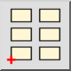

Εισαγωγή μπλοκ
Γραμμή εργαλείων / Εικονίδιο:

Μενού: Μπλοκ > Εισαγωγή μπλοκ
Συντόμευση: B, I
Εντολές: blockinsert | minsert | insert | bi
Γραμμή εργαλείων / Εικονίδιο:

Μενού: Μπλοκ > Εισαγωγή μπλοκ
Συντόμευση: B, I
Εντολές: blockinsert | minsert | insert | bi
Αυτό το εργαλείο εισάγει το ενεργό μπλοκ στο σχέδιο. Δημιουργούνται μία ή περισσότερες αναφορές μπλοκ στο σχέδιο για να αναπαραστήσουν το ενεργό μπλοκ.
